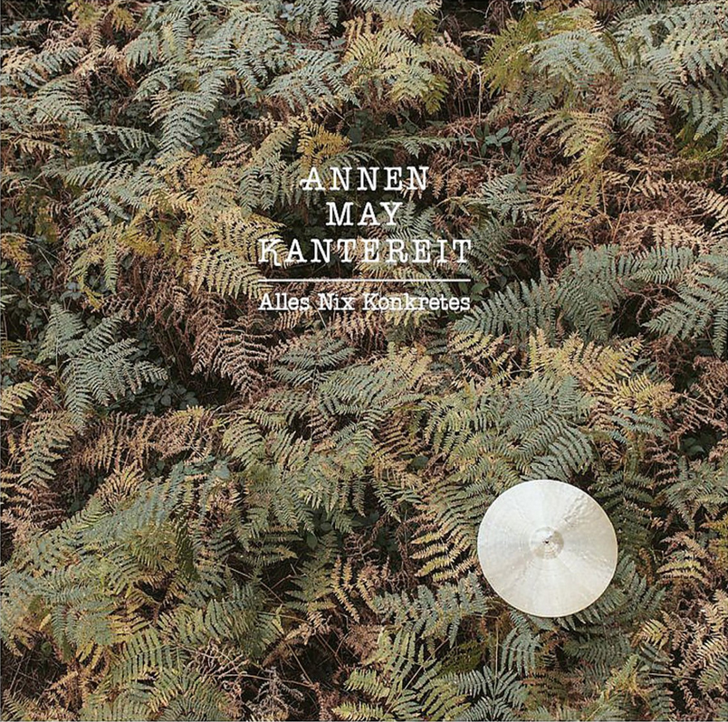

published March 14th 2020
Wohin Du gehst
by AnnenMayKantereit

Most people remember exactly what they did on September 11th in 2001 or that day when Lady Diana
died in a car crash in Paris. Of course, I do, too, but I also remember exactly when I heard the
voice of Henning May, singer of the Band “AnnenMayKantereit” the first time.
I was sitting in my car in front of my house and instead of going in, I listened fascinated to a
radio show about Bob Dylan, in which they briefly played some pieces of German bands that were
supposed to be heavily influenced by Dylan.
If you know nothing about this Band yet, you should not google it or watch their video clips on
youtube, but just only listen to them first, as I did on that night in my car. Henning May has one
of the most stunning and powerful voices I’ve ever heard, and I almost fell from my chair later that
night, when I saw the band on youtube. The image, that the voice had produced in my head couldn’t
have been further away from reality.
I won’t say anything more to this band for now. They have so many great songs and stirring lyrics,
that there will be plenty of opportunities in later articles.
PS: If you have followed my advice and have first only listened to that song, go on youtube
afterwards and search for “wohin du gehst live berlin”. This clip is from a concert in 2016 and I
would sell my grandmother if I could have been there. A recording of this show was later also
released as an album.
Lyrics
Wohin du gehst, sagst du nicht mehr
1) Where you go, you don’t say anymore
Wenn wir uns sehen, fällt mir das Fragen schwer
2) When we meet, it’s hard for me to ask questions
Du hast jetzt neue Leute, die dich besser kennen
3) You have new people now, who know you better
Und nach'm Feiern bei dir pennen
4) And who crash at your place after going out
"nach'm is short for "nach dem" and “pennen” is a colloquial term for sleeping and often used, when
you stay at someone’s place (bei jemanden pennen) or when someone sleeps very long (er/sie pennt den
ganzen Tag). It is quite a normal term for younger people, but for older people, it has a negative
touch. A very common, but insulting term for a homeless person also is a “Penner”.
Du hast jetzt neue Leute! Die dich besser kennen!
5) You have new people now, who know you better
Und nach'm Feiern bei dir pennen
6) And who crash at your place after going out
Du kennst mich nur noch, wie ich früher war
7) You only know me, how I was in the past
Rote Augen, langes Haar
8) Red eyes, long hair
Wenn wir uns sehen, dann ist das immer nur 'ne Stunde
9) When we meet, it’s always only for an hour
Um elf willst du schon gehen, und holst die letzte Runde
10) At eleven, you already want to leave and order the last
round
Wohin du gehst, sagst du nicht mehr
11) Where you go, you don’t say anymore
Wenn wir uns sehen, fällt mir das Fragen schwer
12) When we meet, it’s hard for me to ask questions
Wohin du gehst, sagst du nicht mehr
13) Where you go, you don’t say anymore
Mir fällt das Fragen schwer
14) It’s hard for me to ask questions
Ich hab‘ dir nie verziehen
15) I have never forgiven you
Einfach wegzuziehen
16) For just moving away
Ich hab‘ dich nicht mal angeschrien
17) I didn‘t even yell at you
Du kennst mich nur noch, wie ich früher war
18) You only know me, how I was in the past
Breites Grinsen, langes Haar
19) Big grin, long hair
“Einfach wegzuziehen” could be translated to “just moving away” or “simply moving away” and conveys,
that his former friend moved away without properly saying good bye and/or never tried to stay in
touch afterwards.
Und manchmal sehen wir uns bei Leuten, die wir beide kennen
20) And sometimes, we meet each other at places of people
that we both know
Aber anstatt wegzurennen, schauen wir uns heimlich an
21) But instead of running away, we look at each other
secretly
Weil man sich nicht mehr kennen lernen kann!
22) Because you can’t get to know each other again!
Weil man sich nicht mehr kennen lernen kann!
23) Because you can’t get to know each other again!
Wohin du gehst, sagst du nicht mehr
24) Where you go, you don’t say anymore
Wohin du gehst, sagst du nicht mehr
25) Where you go, you don’t say anymore
Wenn wir uns sehen, fällt mir das Fragen schwer
26) When we meet, it’s hard for me to ask questions
Wohin du gehst, sagst du nicht mehr
27) Where you go, you don’t say anymore
Mir fällt das Fragen schwer
28) It’s hard for me to ask questions
Wohin ich geh, sag ich nicht mehr
29) Where I go, I don’t say anymore
Dir fällt bestimmt das Fragen schwer
30) Surely, it’s hard for you to ask questions
Notice, that in the last two lines the persons are switched, indicating, that the feeling is mutual.
In German you could say: “Es beruht auf Gegenseitigkeit"